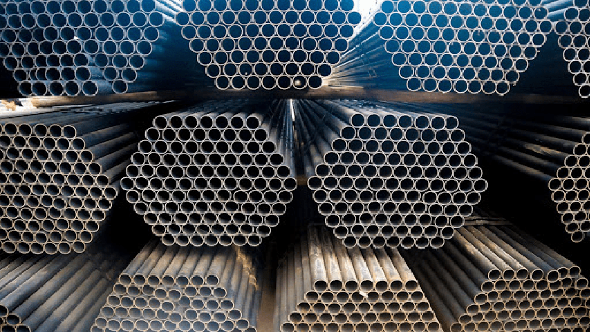
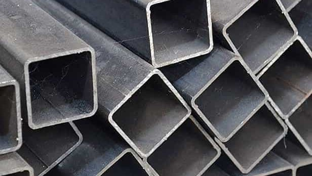

Все о профильных трубах в Частном предприятии Склад Металла
В нашем предприятии профильные трубы созданы из качественных сплавов и являются
адекватными по стоимости и цельности. Вы можете ознакомится с размерностями и ценами труб на этом сайте,
а также по ссылке.

Водогазопроводная и электросварная трубы

Профильные трубы
материалов
Квадратные трубы
Трубный металлопрокат — картина металлопроката, изготавливаемый способом
сварки листовой стали (электросварные трубы) или же прокатки болванок
(бесшовные трубы), представляющий собой полые изделия круглого, квадратного,
прямоугольного, округлого профиля.
Поперечник относительного прохода (DN, Ду) — относительная размер внутреннего поперечника труб в
миллиметрах или же округло в дюймах. Это главная размерная черта водогазопроводных и покрытых цинком труб,
соединительных частей к ним, фитингов и запорной арматуры.
Относительный проход приблизительно соответствует внутреннему поперечнику вещества трубопровода,
воплощенному в миллиметрах. Он не содержит единицы измерения и указывается, к примеру, как DN 100
или же Ду 100.
Поперечник внешний (Дн) — измеряется в миллиметрах и регламентируется действующими ГОСТами.
Поперечник внутренний (Дв) — измеряется в миллиметрах, и рассчитывается по формуле: Дв = Дн — 2хS. Где: S —
толщина стены в миллиметрах.
Внутренний поперечник труб (Дв) как правило не равен поперечнику относительного прохода (Ду). К примеру, у
труб с внешним поперечником 159 мм при толщине стены 8 мм настоящий внутренний поперечник оформляет 143 мм, а
при толщине стены 5 мм — 149 мм, впрочем в обоих случаях относительный проход принимается равным 150.
Как правило габариты темных и покрытых цинком водогазопроводных труб означают по внутренним поперечникам,
а других типов — по внешним.
Длина трубы — измеряется в метрах или же миллиметрах и находится в зависимости от поперечника трубы, метода
приготовления, завода-изготовителя.